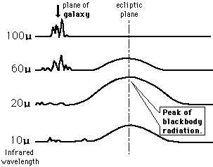

IRAS stayed aloft for over a year gathering infrared data. The signals in the galactic plane were expected, but the signals in the ecliptic plane were surprising because a peak
of emissions at about 20 microns was observed from dust, etc. in the ecliptic plane. Treating it as blackbody radiation and using the Wien displacement law, an
effective temperature of about
145 K was obtained for this solar
system debris.
|  |
|
Index
Blackbody radiation concepts |